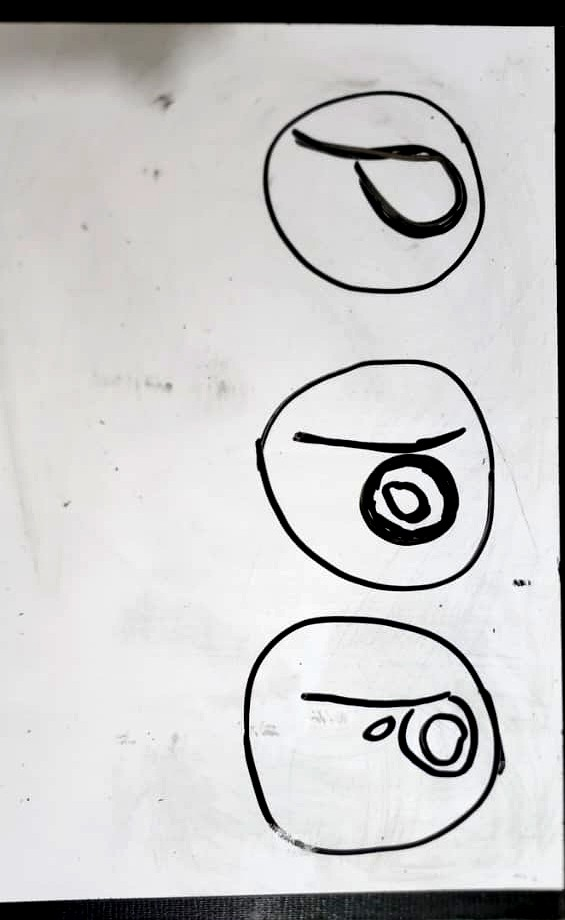
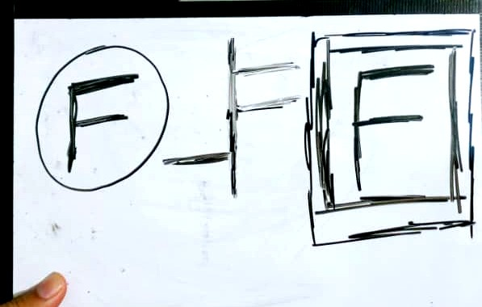
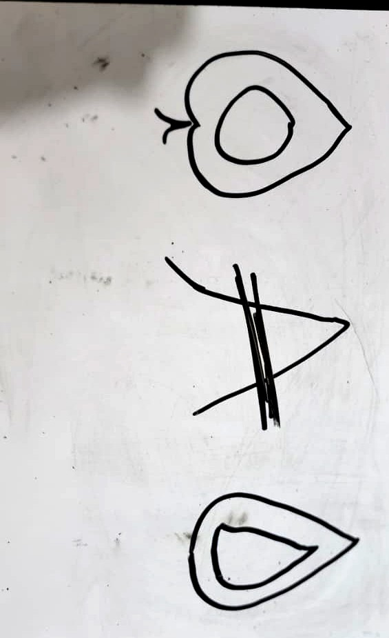

Case files
Selected workKodRank — Vector Rebuild
A rough, low-resolution logo redrawn from scratch as a clean, scalable vector — every path rebuilt by hand, ready for print and screen at any size.
Vector cleanup
Poppy — Food Brand Mark
A "P" mark for a food brand where the cut-away circle reads as a bowl and the stem doubles as a spoon. A small decorative seed sits at the point where the circle meets the stem — a quiet, literal nod to what the brand actually sells.
Logo concept · Food

Fluxo — SaaS Favicon
A geometric "F" built as a square-in-square mark for a SaaS venture — designed to hold its shape and stay legible all the way down to favicon size.
Logo concept · SaaS

Sana — Healthcare Brand Kit
A full identity system for a healthcare venture: mark, primary and secondary palette, heading and body type pairing, and clear do's and don'ts for how the mark can and can't be used. Built to hand off to a client as a real style guide, not just a logo file.
Brand kit · Healthcare
